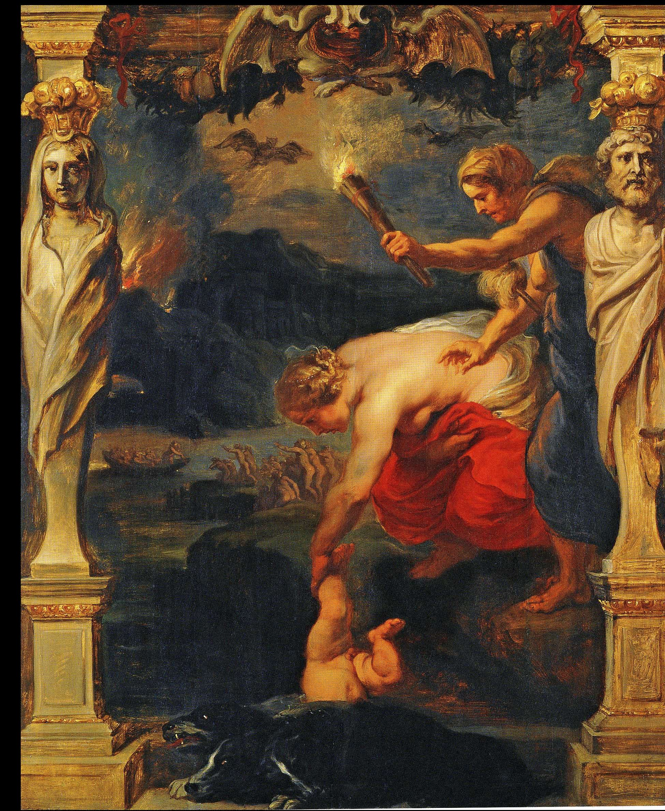
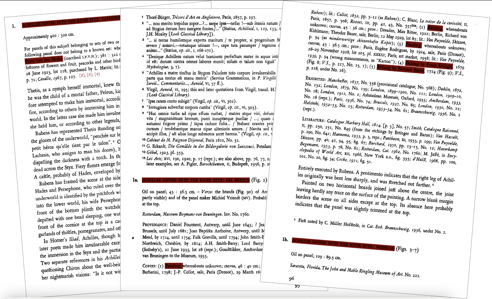
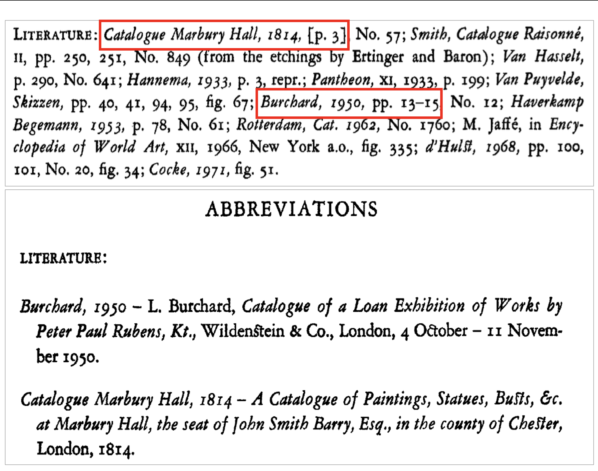
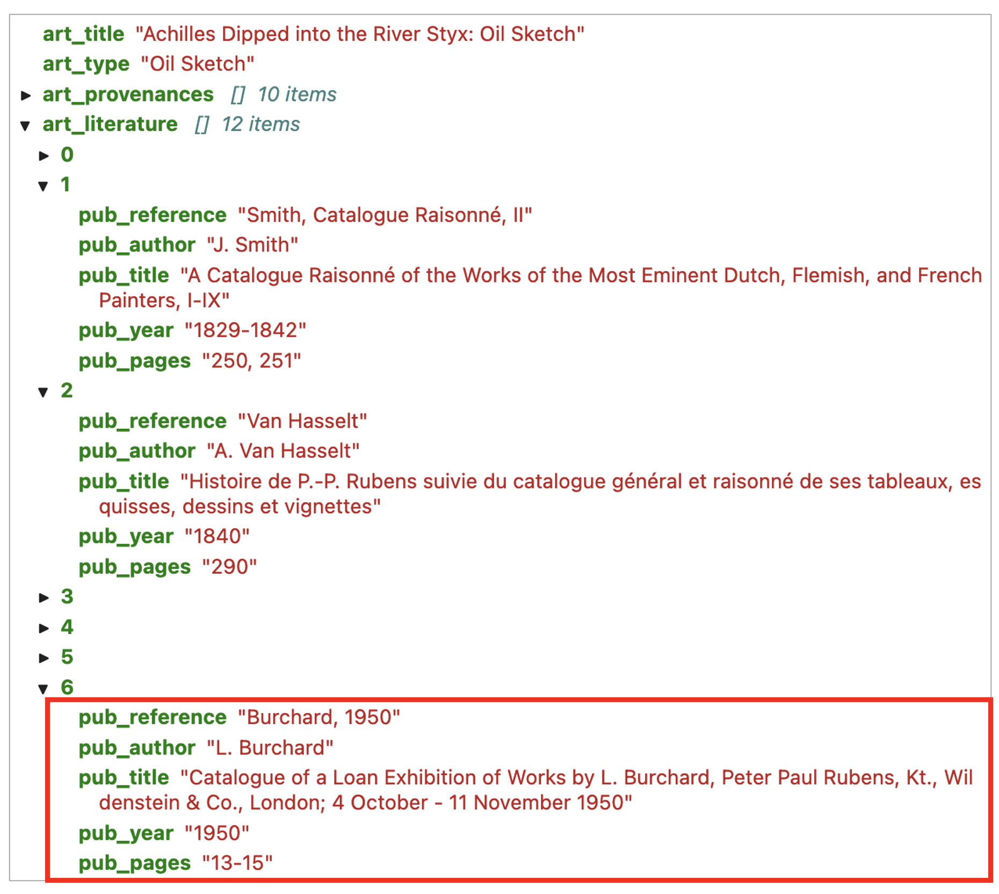
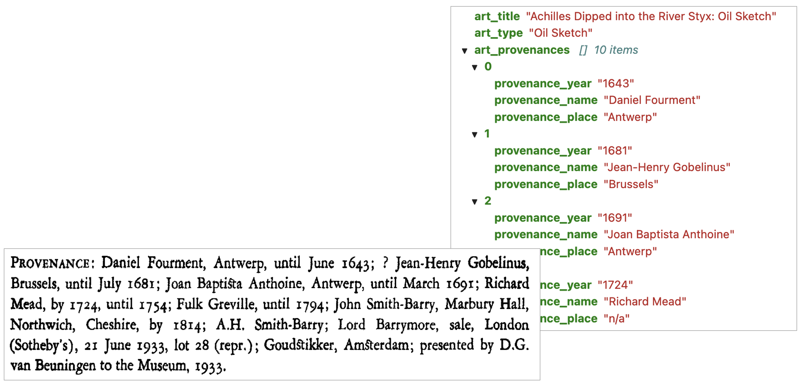
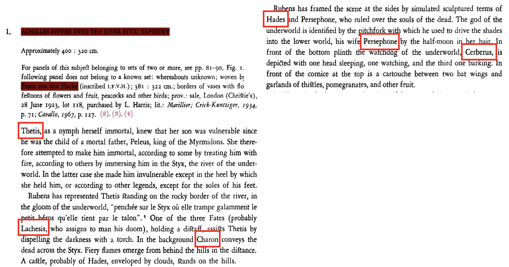
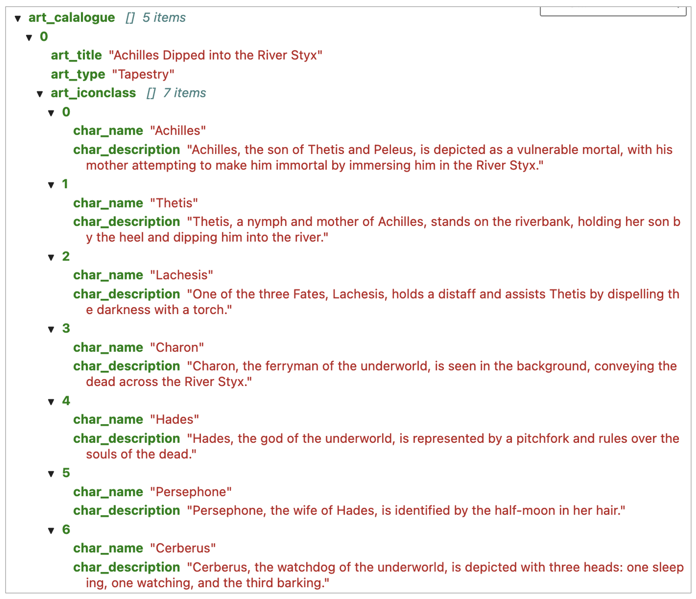
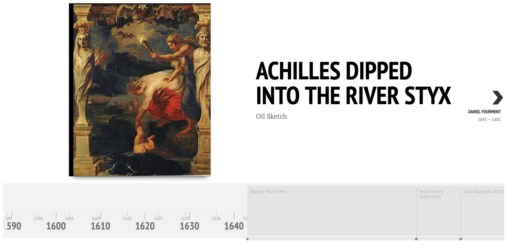

AI4Culture Hackathon
Un2Structured
Unlocking An Unstructured Pdf Art Catalogue - Corpus Rubenianum
AI4Culture Hackathon - 20 February 2025
Arnoud Wils -
The Plant
- Maastricht University

Corpus Rubenianum
impressive catalogue of Rubens's works
based on the documentation on artworks belonging to the Rubens specialist Ludwig Burchard (1886-1960)
edited by Centrum Rubenianum
enriched with links to artwork images at the Netherlands Institute for Art History (RKD)
books that are more than 15 years available as full-text searchable PDF files
The challenge
From unstructured to structured information
What we tried
: LLM-powered extraction of structured (json) information from pdf files
Purpose
: provide useful research data
Technology used
: LlamaParse, LlamaIndex, Cohere LLM API
Corpus Rubenianum

Literature

Literature
full bibliographic record
retrieved from the
'Literature' section
extraction of structured data
JSON format

Provenances
extraction of structured data
JSON format

Iconography

Iconography
extraction of structured data
names, attributes, position
JSON format

Valorizing results - First steps
Provenances Timeline

Object Detection
with Multimodal LLM